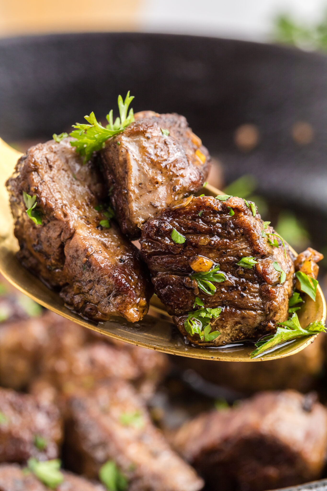

Filé - Steak Bites with Garlic Butter

Description
These juicy Steak Bites with Garlic Butter are seared to perfection and
tossed in a buttery, garlicky sauce that makes them totally irresistible.
They're quick to make, packed full of flavor, and ideal for quick
weeknight dinners or easy entertaining. Serve over rice or mashed
potatoes… or enjoy straight from the pan - you won't want to wait!
Ingredients
-
1.5 pounds of tender cut beef such as fillet mignon/beef tenderloin,
sirloin, ribeye etc
- 1 tablespoon of olive oil
- 4 tablespoons of unsalted butter
- 5 cloves of garlic, minced
- kosher salt, to taste
- freshly ground black pepper, to taste
- 2 tablespoons of fresh parsley, roughly chopped optional
Steps
-
Dice the steaks into pieces that are roughly the same size so they cook
evenly, ideally 1-inch/3cm pieces.
-
Then season your steak cubes with salt and pepper and let them sit at
room temperature for 15-30 minutes.
-
If your steaks bites "sweat" after sitting in salt and pepper, you can
pat dry any excess moisture with a paper towel.
-
Heat a large skillet over medium heat and drizzle in the oil and sear
the steak pieces in batches, about 2 minutes per side or golden brown.
Be sure not to crowd the pan because you want them to get a nice sear.
Once cooked to perfection, remove from the pan and set aside to rest on
a clean plate. Repeat the process until all the steak bites are cooked.
-
Once the steak bites are all cooked, lower the heat on the same pan. Add
in the butter to melt, then measure in the garlic. Cook the garlic just
until fragrant and slightly golden — don't let it brown. This will take
1-2 minutes.
-
Return the steak bites (and their juices) to the skillet. Toss to coat
in the garlic butter. Finish with fresh parsley and serve right away.
Bom Apetite!
Odin Recipes